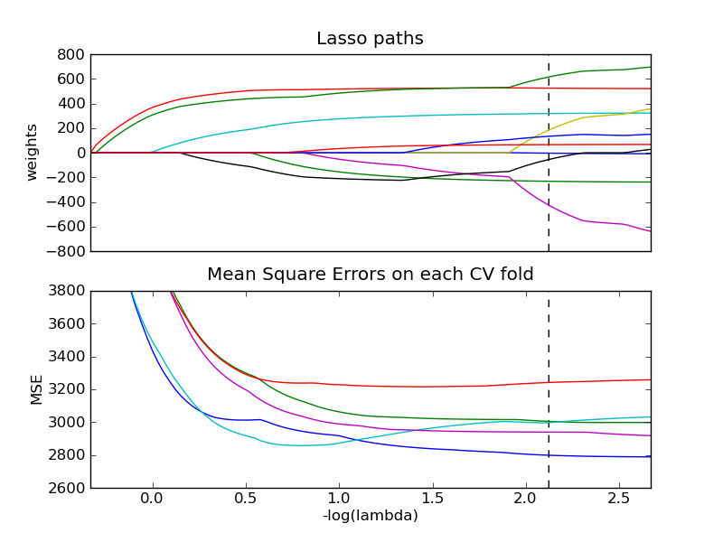

Cross validated Lasso path with coordinate descent¶
Compute a 5-fold cross-validated Lasso path with coordinate descent to find the optimal value of alpha.

Python source code: plot_lasso_path_crossval.py
print __doc__
# Author: Olivier Grisel
# License: BSD Style.
import numpy as np
import pylab as pl
from scikits.learn.linear_model import LassoCV
from scikits.learn import datasets
diabetes = datasets.load_diabetes()
X = diabetes.data
y = diabetes.target
# normalize data as done by LARS to allow for comparison
X /= np.sqrt(np.sum(X ** 2, axis=0))
##############################################################################
# Compute paths
eps = 1e-3 # the smaller it is the longer is the path
print "Computing regularization path using the lasso..."
model = LassoCV(eps=eps).fit(X, y)
##############################################################################
# Display results
m_log_alphas = -np.log10(model.alphas)
m_log_alpha = -np.log10(model.alpha)
ax = pl.gca()
ax.set_color_cycle(2 * ['b', 'r', 'g', 'c', 'k'])
pl.subplot(2, 1, 1)
pl.plot(m_log_alphas, model.coef_path_)
ymin, ymax = pl.ylim()
pl.vlines([m_log_alpha], ymin, ymax, linestyle='dashed')
pl.xticks(())
pl.ylabel('weights')
pl.title('Lasso paths')
pl.axis('tight')
pl.subplot(2, 1, 2)
ymin, ymax = 2600, 3800
pl.plot(m_log_alphas, model.mse_path_)
pl.vlines([m_log_alpha], ymin, ymax, linestyle='dashed')
pl.xlabel('-log(lambda)')
pl.ylabel('MSE')
pl.title('Mean Square Errors on each CV fold')
pl.axis('tight')
pl.ylim(ymin, ymax)
pl.show()